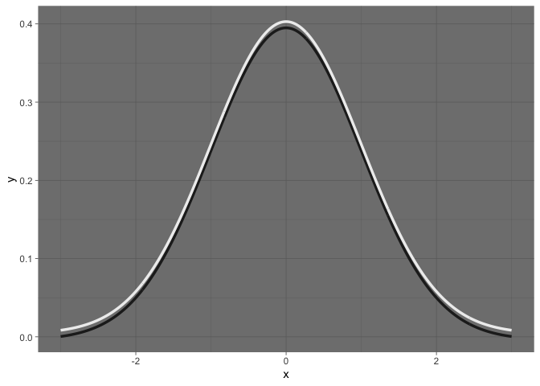
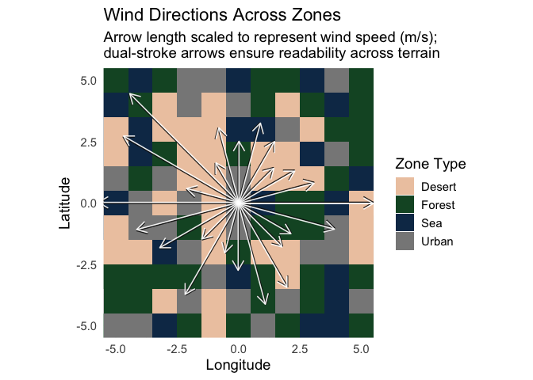

ggtwotone is an R package that extends ggplot2 with dual-stroke and contrast-aware geoms. It helps you create clear, high-contrast annotations and lines that remain visible across complex or variable backgrounds.
geom_segment_dual(): Dual-stroke line segments with vertical offset
geom_lm_dual(): Dual-tone regression line with contrast-aware strokes
geom_curve_dual(): Dual-stroke curved line annotations
geom_curve_dual_function(): Plot mathematical or statistical functions as smooth dual-stroke curves
geom_text_contrast(): Automatically switches between light/dark text color based on background
adjust_contrast_pair(): Helper function to find contrast-boosted color pairs using WCAG/APCA
You can install the development version of ggtwotone from GitHub with:
This is a basic example which shows you how to solve a common problem:
library(ggplot2)
library(ggtwotone)
df <- data.frame(x = 1:3, y = 1, xend = 1:3, yend = 2)
ggplot(df) +
geom_segment_dual(
aes(x = x, y = y, xend = xend, yend = yend),
color1 = "#FFFFFF", color2 = "#000000", linewidth = 2
) +
theme_dark()ggplot() +
geom_curve_dual_function(
fun = dnorm,
xlim = c(-3, 3),
color1 = "#EEEEEE", color2 = "#222222",
offset = 0.004,
linewidth = 1.2,
smooth = TRUE
) +
theme_dark()
library(dplyr)
# 1. Zone-colored background with more Sea tiles
set.seed(42)
tile_df <- expand.grid(x = -7:7, y = -7:7)
zones <- c("Desert", "Forest", "Sea", "Urban")
zone_colors <- c(
"Desert" = "#EDC9AF",
"Forest" = "#14532d",
"Sea" = "#0F3556",
"Urban" = "#eeeeee"
)
tile_df$zone <- sample(
zones,
size = nrow(tile_df),
replace = TRUE,
prob = c(0.2, 0.2, 0.4, 0.2) # Increase Sea coverage
)
# 2. Realistic wind vectors from various points
set.seed(42)
n <- 25
wind_df <- data.frame(
x = sample(-4:4, n, replace = TRUE),
y = sample(-4:4, n, replace = TRUE),
angle = runif(n, 180, 270), # Southwest quadrant
speed = runif(n, 1.5, 4) # Speed in m/s
) |>
mutate(
xend = x + speed * cos(angle * pi / 180),
yend = y + speed * sin(angle * pi / 180)
)
# 3. Plot with dual-stroke arrows
ggplot() +
geom_tile(data = tile_df, aes(x = x, y = y, fill = zone)) +
scale_fill_manual(values = zone_colors, name = "Zone Type") +
geom_segment_dual(
data = wind_df,
aes(x = x, y = y, xend = xend, yend = yend),
color1 = "#FFFFFF", color2 = "#111111",
linewidth = 1.2,
arrow = arrow(length = unit(0.15, "inches"), type = "open"),
alpha = 0.9
) +
coord_fixed(xlim = range(c(wind_df$x, wind_df$xend)),
ylim = range(c(wind_df$y, wind_df$yend))) +
theme_minimal(base_size = 14) +
theme(
panel.background = element_rect(fill = "white", color = NA)
) +
labs(
title = "Wind Directions Across Zones",
subtitle = "Arrow direction and length represent wind flow and speed (m/s);\ndual-stroke improves visibility",
x = "Longitude",
y = "Latitude"
)
This example visualizes wind directions and speeds over a zone-classified terrain map using geom_segment_dual().
Arrow length is scaled by wind speed (in m/s), and dual-stroke styling ensures clear visibility across contrasting terrain types such as desert, forest, sea, and urban zones.
In real-world plots, especially on mixed backgrounds (grayscale tiles, images, or map layers), default ggplot2 annotations can disappear. ggtwotone solves this with:
Dual-stroke visibility: top and bottom layers ensure readability
Contrast checking: uses APCA/WCAG to optimize color pairing
Fallback safety: gracefully assigns black/white when needed
You can explore all functions in the Reference Manual, or see them in the R help tab after loading the package.